In[1]:=
Simple Network Example
In[2]:=
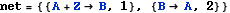
Out[2]=
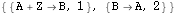
In[3]:=
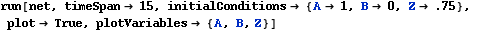
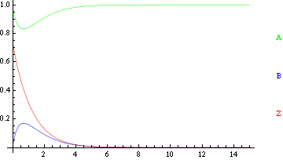
Out[3]=
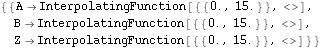
Boundary Condition Example
Define a time-dependent stimulation
In[4]:=
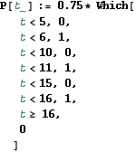
In[5]:=
Out[5]=
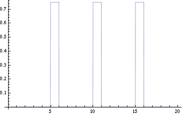
Run the same network with Z[t] held fixed to the value of function P[t]
The option MaxStepFraction needs to be set because the default value is 1/10, and the system is so simple the integrator will actually miss the pulses.
In[6]:=
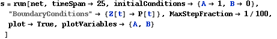
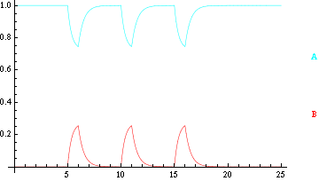
Out[6]=
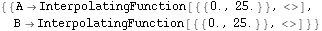
In[7]:=
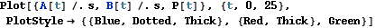
Out[7]=
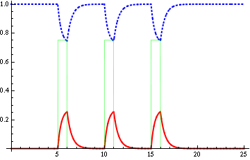
| Created by Wolfram Mathematica 6.0 (24 June 2008) |